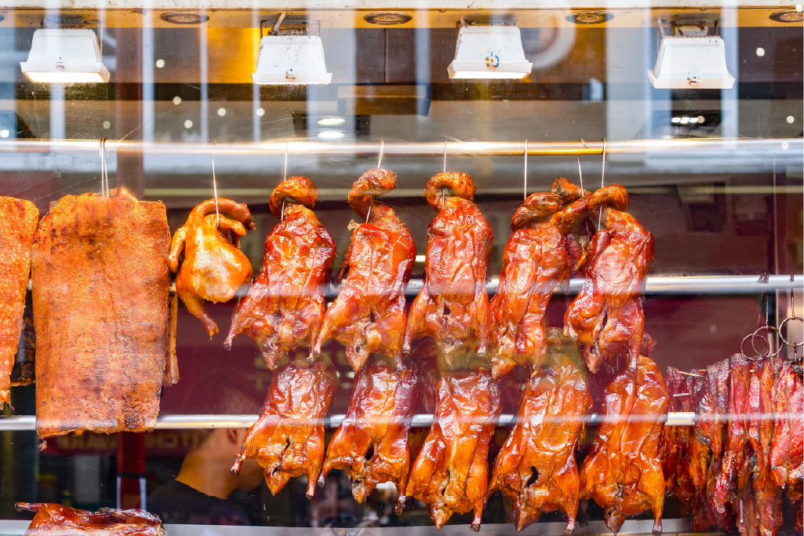
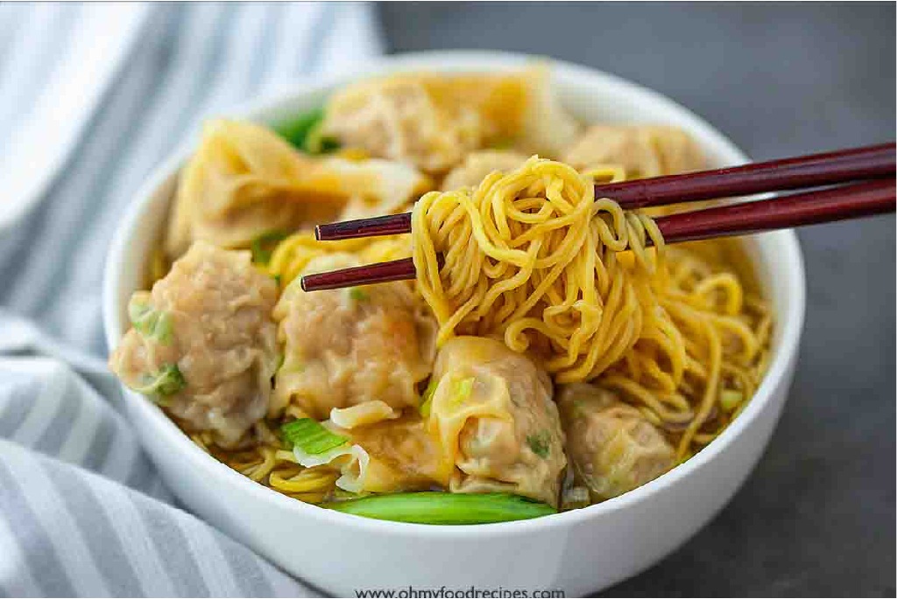
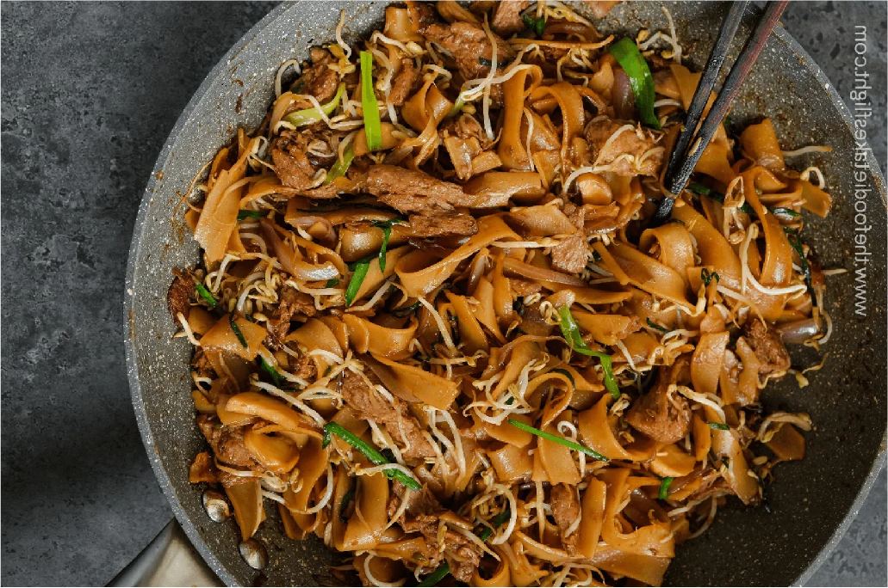
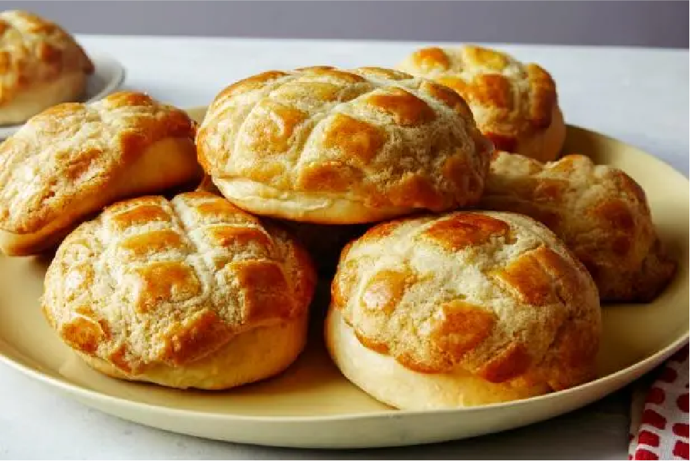
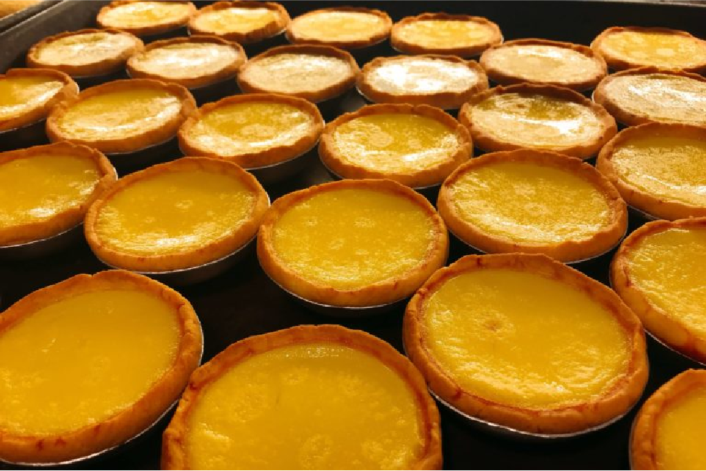
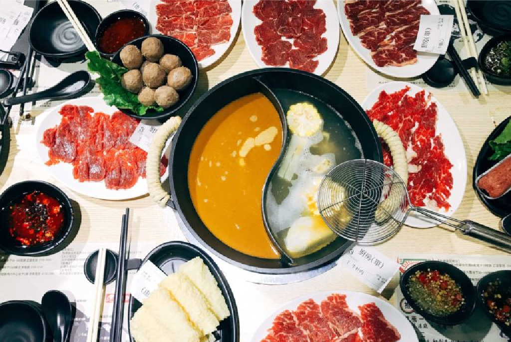

品嚐一下你所能體驗到的最棒美食
Taste some of the best cuisine you'll ever eat
香港飲食文化是一種充滿活力的融合體：它以粵菜為基底，融入了英國殖民時期的歷史印記、中國各地（如上海、客家、潮州）的飲食風味，以及來自日本、韓國和東南亞等地的全球化風味。
Hong Kong cuisine is a vibrant fusion built on a Cantonese foundation combined with British colonial history, regional Chinese influences (such as Shanghainese, Hakka, and Teochew), and global flavors from Japan, Korea, and Southeast Asia.

粵式燒味
Cantonese Barbecue
粵式燒味－以經典的叉燒（即「叉燒肉」）為典型代表－呈現出一種標誌性的風味平衡，兼具甜、鹹與香氣。
Cantonese BBQ flavor—best exemplified by classic char siu (fork-roasted pork)—is a signature balance of sweet, savory, and aromatic profiles.

點心
Dim Sum
點心涵蓋了極其豐富的口味，融合了鹹、鮮、甜、醇厚及清爽等多種風味，並與傳統的粵式烹飪技巧緊密結合。
Dim sum covers a wide spectrum of tastes, combining salty, savory, sweet, umami, and fresh flavor profiles tied to traditional Cantonese cooking techniques.

雲吞面
Wonton Noodles
雲吞麵的風味鹹鮮、帶有海味，並透著一絲微甜；其基底由海鮮與豬肉熬製而成，鮮味十足。
The flavor of wonton noodles is savory, briny, and subtly sweet, built around an umami-rich seafood and pork base.

牛腩麵
Beef Brisket Noodles
牛腩麵風味濃鬱，透著醇厚的肉香，並巧妙融合了溫潤的香料、醬油，以及微甜鮮美的底蘊。
Beef brisket noodles feature a savory, deeply beefy flavor profile balanced by warm aromatic spices, soy, and sweet-umami undertones.

乾炒牛河
Beef Chow Fun
乾炒牛河風味濃鬱，鹹香適口，帶有淡淡的焦香，融合了鹹味、鮮味與甜味。
Beef chow fun has a rich, savory, and slightly smoky flavor profile that combines salty, umami, and sweet notes.

菠蘿包
Pineapple Bun (Bolo Bao)
儘管名字裡面有「鳳梨」二字，但傳統的港式鳳梨包其實並不含菠蘿，也沒有鳳梨味。它是一種口感鬆軟、帶有淡淡甜味的奶香麵包；製作時常採用“湯種”（即由麵粉和水加熱製成的糊狀物）工藝，以使麵包更加濕潤、輕盈。
Despite the name, traditional Cantonese pineapple buns (bolo bao) do not contain any actual pineapple or pineapple flavor. They are soft, fluffy, and a slightly sweet milk bread, often made using the tangzhong (cooked flour-and-water paste) method for extra moisture and lightness.

腸粉
Cheun Fun
腸粉是一種蒸米漿卷，常作為街頭小吃或在港式茶樓中出現。製作精良的腸粉口感絲滑，絕無黏糊感，散發著陣陣清新的米香。
Cheung fun are steamed rice rolls you can often find as street snacks or at dim sum parlors. When made well, these rolls are silky smooth, not at all gummy, and have a wonderful aroma of freshly steamed rice.

蛋塔
Hong Kong-style Egg Tarts
蛋塔主要有兩種：一種是脆皮蛋撻，另一種是酥皮蛋撻。兩者同樣出色，但脆皮蛋撻始終是更經典的選擇。
There are two distinct varieties of egg tarts: the shortcrust egg tart, and the puff pastry egg tart. Both are equally as good, but the classic will always be the shortcrust pastry egg tart.

港式火鍋
Hong Kong Hot Pot
火鍋堪稱最具社交屬性的用餐方式。作為冬季的另一個熱門選擇，火鍋的核心在於一鍋沸騰的調味湯底：將生肉片、魚片或各類蔬菜放入其中涮煮，直至熟透。沾醬也是火鍋不可或缺的一部分——你可以從種類繁多的醬料和佐料中進行挑選，從最基礎的醬油，到芝麻醬或炸蒜末，隨心所欲搭配出屬於你的「獨門蘸料」。
Hot pot dinners are as social as meals can get. Another winter favorite, a boiling vat of seasoned broth, then dipping thin slices of raw meat, fish, or vegetables into the broth until they’re cooked. Condiments are also an important part of hot pot– perfect your magical dipping concoction by choosing between a huge range of sauces and aromatics from plain old soy sauce to sesame paste or deep fried garlic.